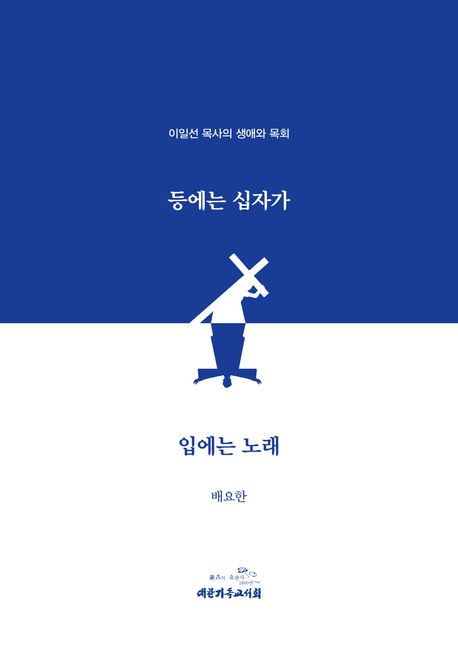

사진과 기록으로 만나는 한 목회자의 발자취
그의 삶은 곧 한국 교회의 한 페이지였다
시대의 어둠 속에서 빛을 비춘 목회자의 삶

이일선 목사는 격동의 한국 근현대사 한가운데서 복음의 빛을 들고 살아간 목회자였습니다. 그는 가난한 이웃과 상처받은 영혼들의 곁을 떠나지 않았으며, 강단에서는 진리를, 삶에서는 사랑을 증거한 시대의 종이었습니다.
전쟁의 폐허와 분단의 아픔, 그리고 산업화의 격변기 속에서도 그는 한결같이 하나님의 말씀을 붙들고 한국 교회의 부흥과 사회 봉사, 그리고 다음 세대의 신앙 계승을 위해 헌신하였습니다. 그의 발자취는 한국 교회사의 소중한 한 장으로 남아 있습니다.
이 아카이브는 그가 남긴 설교, 사진, 친필 기록, 그리고 그를 기억하는 이들의 증언을 한자리에 모아, 그의 신앙과 삶이 오늘 우리에게 어떤 의미로 다가오는지를 함께 묻고자 합니다.
시간의 결을 따라 펼쳐지는 한 목회자의 여정
일제강점기, 어린 시절 그의 마음에 처음 심긴 복음의 씨앗. 가정과 교회에서 자라난 신앙의 뿌리를 살펴봅니다.
해방과 전쟁의 격동기 속에서 신학을 공부하며 목회자의 길을 결단한 시간. 그가 받은 부르심의 기록입니다.
폐허 위에서 다시 일어선 한국 교회와 함께한 초기 목회의 발자취. 설교 노트와 교회 일지에 담긴 헌신의 흔적.
산업화의 그늘 아래 소외된 이웃들을 향해 열려 있던 그의 손길. 말씀을 삶으로 옮긴 실천의 기록.
다음 세대의 목회자들을 위한 강의와 멘토링. 그가 전해준 신앙의 유산은 오늘도 이어지고 있습니다.
설교문, 친필 서한, 사진, 그리고 그를 기억하는 이들의 증언. 한 목회자가 남긴 영적 유산을 한자리에서 만납니다.
내가 달려갈 길과 주 예수께 받은 사명— 사도행전 20:24 —
곧 하나님의 은혜의 복음을 증언하는 일을
마치려 함에는 나의 생명조차 조금도 귀한 것으로 여기지 아니하노라
AI와 함께 그의 기록과 말씀을 대화로 만나보세요